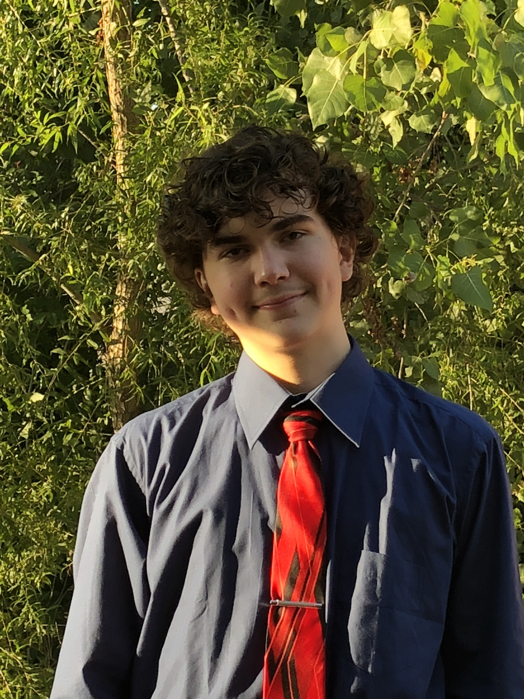

Charles Bush
Biography
I was born in Virginia in 2003 and lived there for about 13 years until moving to Missouri which is where I live currently. I like learning about technology and everything around it. I've also enjoyed playing video games since I was a little kid which partly inspired my love for technology since it can do so many great things. I'm very interested in joining the military since every male I know in my family has severed our country. Not only is it a good career option with tons of benefits, but it also lets me serve my country and keep a tradition alive in my family.
Education
- (Current) Francis Howell High
- (Current) Lewis and Clark Career Center
- Francis Howell Middle
- Captain John Smith Elementary
Career Plans
As of now, my Career plans include joining one of the branches of the armed forces and working in a field similar to what I am learning now. After which they would teach me the skill for that job which would be determined by my scores on the ASVAB. I could stay in the armed forces (Likely Air force) and make a career out of it or leave after some time to get a similar job while still in the national reserves or guard.